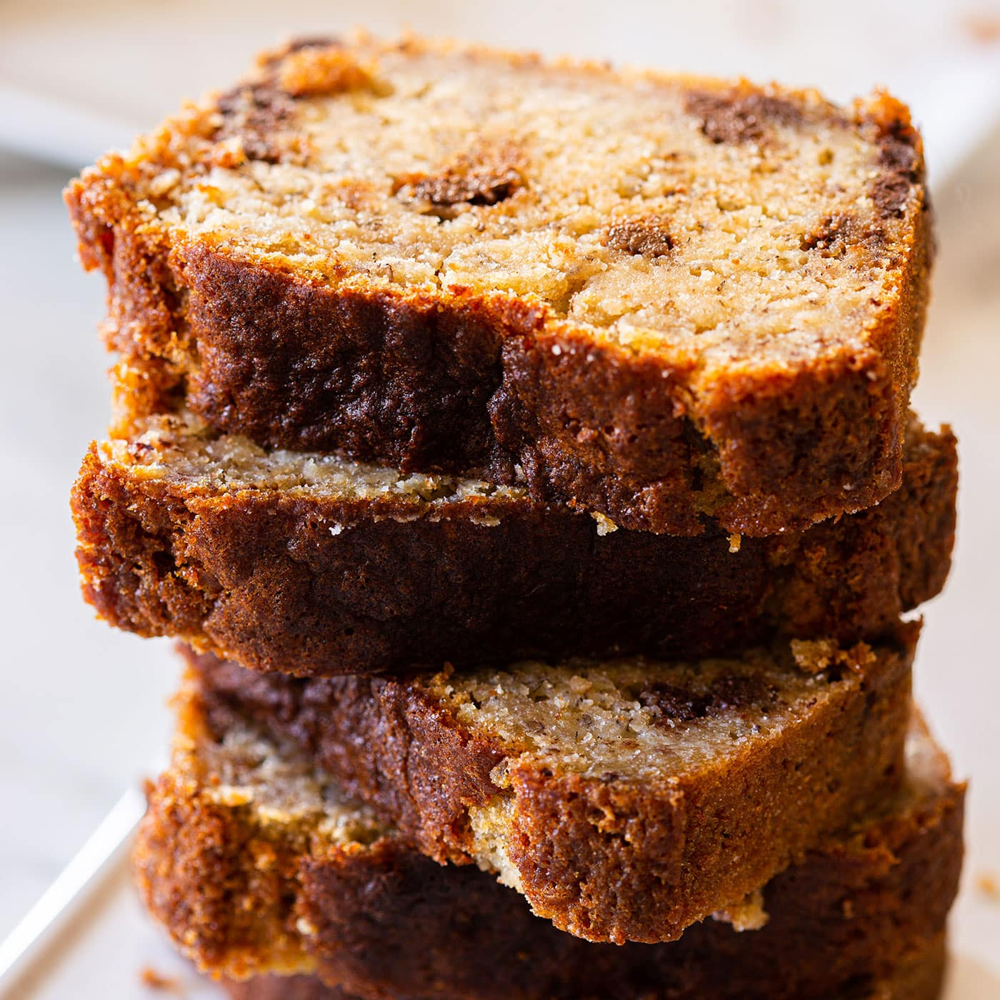

Banana Bread

This is my husband’s recipe which he has perfected over the years and he is known for his Banana Bread. He makes it frequently and it always disappears fast! It is simple to make and our favorite way to use up overripe bananas so they never go to waste. It’s super moist and makes a great breakfast on-the-go. We even created Banana Muffins from this recipe.
This loaf stays moist for days and also makes for a thoughtful and delicious gift idea for the holidays (I’ll take banana bread over fruit cake any day).
Ingredients
- 3 very ripe bananas
- 1/2 cup unsalted better
- 3/4 cup granulated sugar
- 2 large eggs, lightly beaten
- 1 1/2 cups all-purpose flour
- 1 tsp basking soda
- 1/2 tsp salt
- 1/2 tsp vanilla extrace
- 1 cup walnuts
- 1/2 cup raisins
Steps
- Preheat the oven to 350°F. Grease and flour a bread loaf pan (9.25 long x 5.25 wide x 2.75 deep). Lightly roast walnuts on a skillet, continuously stirring so they won’t burn. Coarsely chop and cool to room temperature.
- In a mixing bowl, cream together 8 Tbsp softened butter and 3/4 cup sugar (or honey if using honey).
- Mash bananas with a fork until the consistency of chunky applesauce and add them to the batter along with 2 eggs, mixing until blended.
- In a separate bowl, whisk together: 1 1/2 cups of flour, 1 tsp of baking soda and 1/2 tsp of salt then add to batter.
- Add 1/2 tsp of vanilla extract and mix in chopped walnuts and raisins. Pour into prepared loaf pan. Bake at 350˚F for 55-60 min or until a toothpick inserted into the center comes out clean. Let banana bread rest for 10 min before transferring to a wire rack to cool.
home